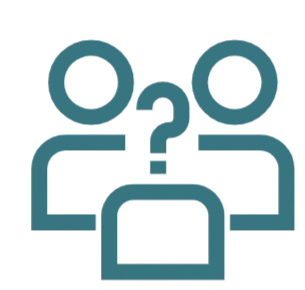
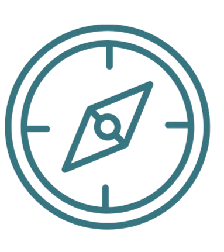
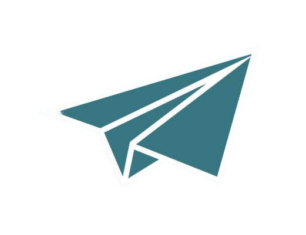
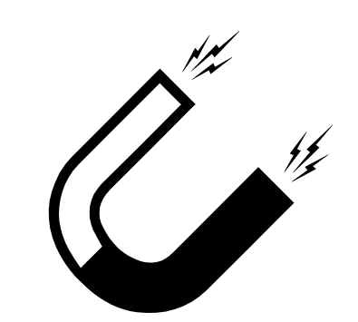
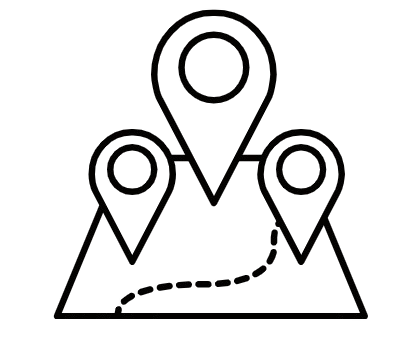
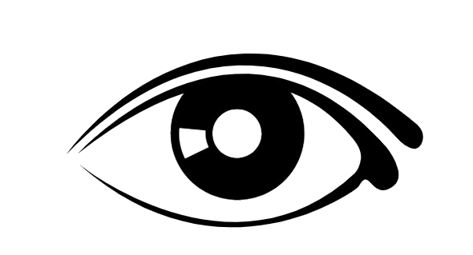
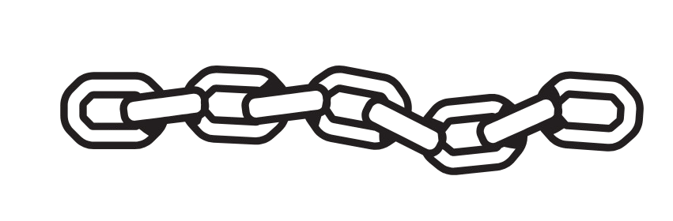

¿QUIENES SOMOS?
Red Educativa Medellín (REM) es una plataforma digital integradora diseñada por estudiantes para estudiantes. Surgimos como una respuesta a la dispersión de información académica en nuestra ciudad, con el propósito de centralizar en un solo lugar todas las oportunidades de educación superior, orientación vocacional y apoyos económicos. Somos el puente entre el bachillerato y el futuro profesional de los jóvenes de Medellín.

NUESTRO HORIZONTE
Nos proyectamos como la herramienta líder de consulta estudiantil en Medellín, reconocida por democratizar el acceso a la información educativa y por reducir la brecha de deserción escolar mediante una orientación vocacional efectiva y tecnológica.
NUESTROS FUNDADORES
Sara Adarve
desarrolladora backend
Sara Rojas
Scrum Master
Juan Quintero
desarrollador IU/UX
David Calderón
Product Owner
Por qué existimos y hacia dónde vamos

MISIÓN
Facilitar la transición de los estudiantes de secundaria hacia la educación superior a través de una plataforma intuitiva que centraliza la oferta educativa, programas de becas y herramientas de evaluación vocacional, empoderando a los jóvenes para tomar decisiones informadas sobre su futuro.
VISIÓN
Para el año 2028, REM será el ecosistema digital educativo más robusto de Medellín, conectando a miles de estudiantes con instituciones de educación superior y aliados estratégicos, convirtiéndose en un referente de innovación social y tecnológica en la región.

Nuestros objetivos de calidad
Los pilares que guían nuestro compromiso con la excelencia educativa, el mejoramiento continuo y la sostenibilidad.

Centralizar la oferta:
Recopilar y organizar los programas educativos y becas vigentes en las instituciones de la ciudad.

Fomentar la orientación:
Implementar pruebas vocacionales interactivas que ayuden al estudiante a identificar su perfil profesional.

Optimizar la experiencia visual:
Diseñar una interfaz basada en ergonomía visual y psicología del color para facilitar la navegación del público joven.

Conectar la comunidad:
Crear un espacio de red donde la información fluya de manera efectiva entre la plataforma y los futuros universitarios.
NUESTROS VALORES
Los principios que orientan cada decisión, cada clase y cada interacción dentro de Formarte. Son el ADN de nuestra cultura institucional.
Accesibilidad
Creemos que la información debe estar al alcance de todos, sin barreras.
Compromiso Social
Trabajamos por el desarrollo y el progreso de los jóvenes de nuestra ciudad.
Transparencia
Brindamos información veraz, actualizada y confiable sobre convenios y becas, Objetivos del Proyecto.
Innovación
Aplicamos herramientas tecnológicas y psicología del color para mejorar la experiencia de usuario (UX/UI).